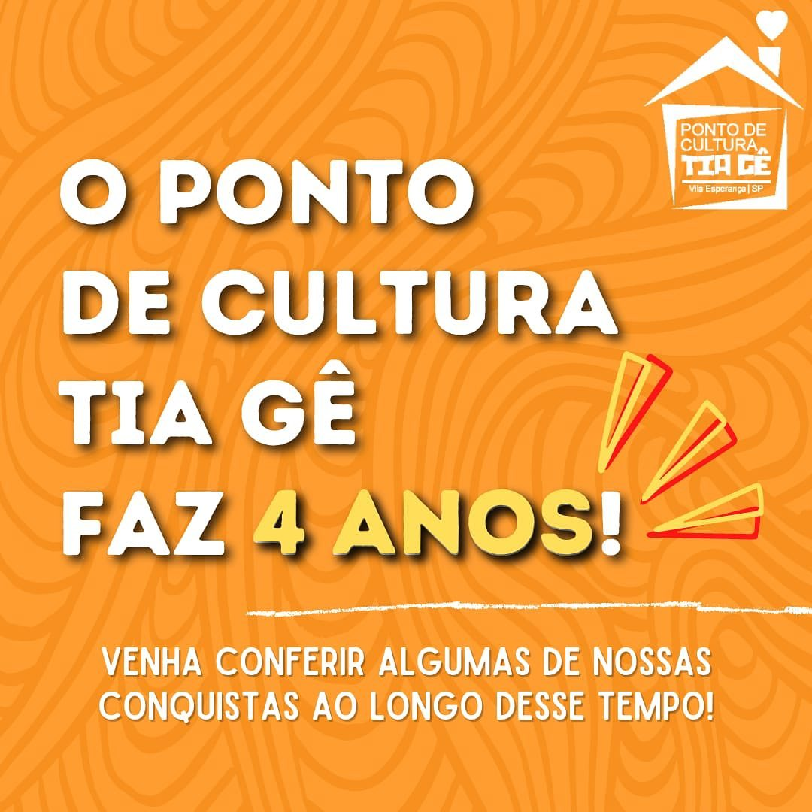

-
-
 -

Geralda Duarte de Oliveira, nossa querida Tia Gê, foi mãe de família, líder comunitária, com forte ligação com as crianças do bairro e com questões sociais da Vila Esperança. Ela também criou e dá nome ao tradicional Bloco Chorões da Tia Gê, fundado em 1973.
Em 1997, perdemos nossa matriarca. Ela nos deixou mas sua marca e trabalho seguem com sua família, amigos, comunidade e todo que por ela foram inspirados.
O Ponto de Cultura que recebeu seu nome mantém o carinho com as crianças e o olhar para o social, se inspira e representa ideais sociais e culturais da alegre e generosa Tia Gê.
Noticia 1
Carnaval 2023
Noticia 2
Escolinha de bateria
Noticia 3